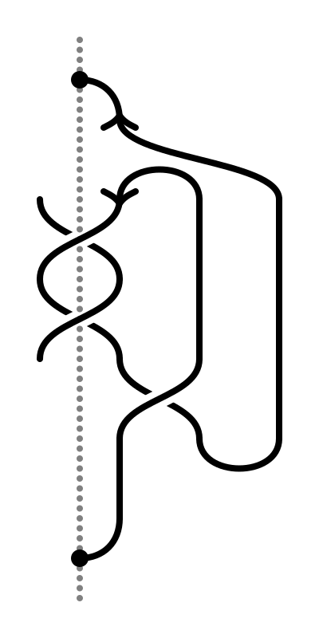

show all invariants
|
show all metadata
kht++
:
examples
/
sitest
/
t
Input data and context

% trefoil
s.l1.y0.y0.y1.u2
,1
% Simplifies with options '-s' to l0.y1.x2.y1.u2.u0
Khovanov type D structure \(\mathrm{\widetilde{CKh}}(L)\)
Rasmussen's s-invariant